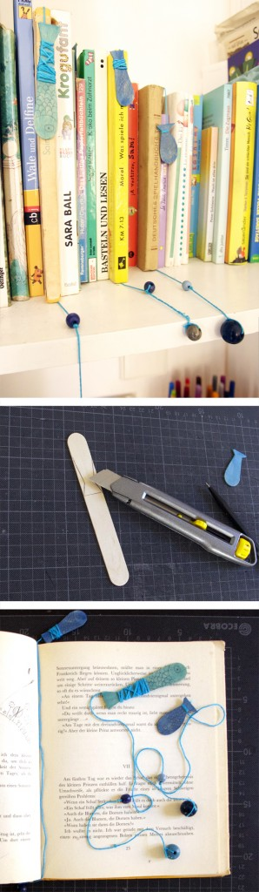

Inicio›Blog›Imprimibles›Marcapáginas de pecesImprimiblesMarcapáginas de peces7 mayo, 2013Con depresores de lengua hicimos unos peces que ahora marcan las páginas de nuestros libros.← Marcapáginas de peces (otra versión)El Big Bang →